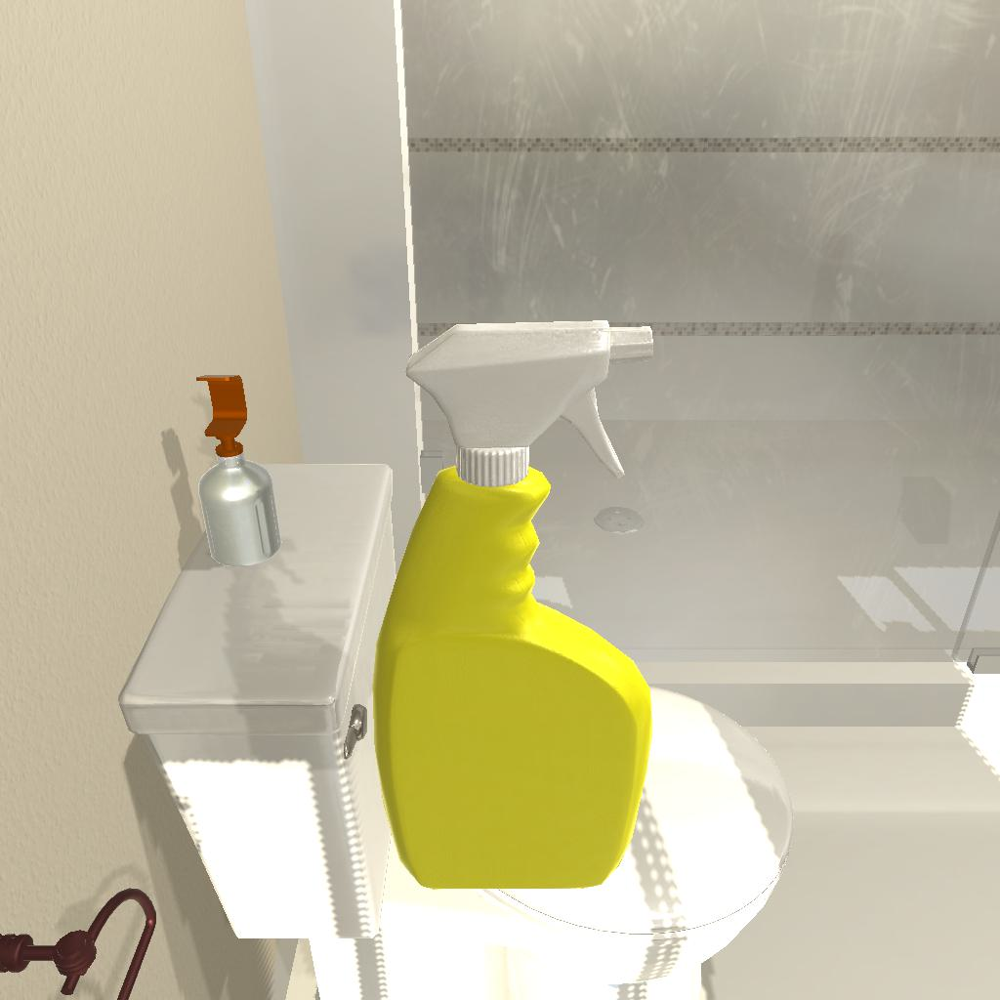

---------------------------------------------------------task: 28---------------------------------------------------------
--------------------------------------------------------------------------------------------------------------------------------------------------------------------
--------------------------------------------------------------------------------------------------------------------------------------------------------------------
Step:--------------------------------------------------------------------------10-------------------------------------------------------------------------------
----------------------------------------
VLM Prompt:
Image1:
Image2:
**Instruction**
1. Analyze the provided images to identify all visible household objects and compare the difference between images (e.h. whether the object is opened or not and taken on hand or not), focusing on those relevant to the task description "put two spraybottle in toilet."
2. Use the analysis of images and the task hint "The agent must find an object of the desired type, pick it up, find the correct location to place it, put it down there, then look for another object of the desired type, pick it up, return to previous location, and put it down there with the other object." to answer the question: what is the most reasonable action in the choices for the task description "put two spraybottle in toilet"?
3. Decide and write the answer using the template: The answer is: (i): , where i is the real number. If there is no desired object in images, search every place based on **Initial Observation** to find the object. And if no one is exactly correct, choose a similar answer.
**Initial Observation**
You are in the middle of a room. Looking quickly around you, you can see bathtub (1), bathtubbasin (1), cart (1), sink (1), garbagecan (1), sinkbasin (1), countertop (1), drawer (1-4), toilet (1), toiletpaperhanger (1)
**Answer Choices**
(1): go to bathtub 1
(2): go to bathtubbasin 1
(3): go to cart 1
(4): go to sink 1
(5): go to garbagecan 1
(6): go to sinkbasin 1
(7): go to drawer 1
(8): go to drawer 2
(9): go to drawer 3
(10): go to drawer 4
(11): go to toiletpaperhanger 1
(12): put spraybottle 1 in/on toilet 1
(13): examine spraybottle 1
(14): examine toilet 1
**Answer**
Let's think step by step by following the instructions.
----------------------------------------
----------------------------------------
Original Response:
First, we analyze the images provided. In both Image 1 and Image 2, we can see a yellow spray bottle prominently featured and being held, which indicates it has been picked up. In Image 1, the spray bottle is being held in a position that suggests it is ready to be used or placed somewhere. In Image 2, the spray bottle is being held but the location is different, indicating movement.
Based on the task description "put two spray bottles in the toilet," and the task hint provided, we can infer that the agent is in the process of picking up spray bottles to place them in the toilet.
Comparing the images with the initial observation, we know there is only one spray bottle visible in the images, and the task requires two. Therefore, the agent will need to find another spray bottle after dealing with the first one.
Now, let's consider the answer choices in relation to the task:
(1) to (11) are locations that the agent could go to in search of the second spray bottle, but these actions do not directly address the task at hand.
(12) "put spraybottle 1 in/on toilet 1" is a direct action that aligns with the task description, assuming the agent is already holding the first spray bottle.
(13) "examine spraybottle 1" may be a precursor action to picking up or placing the bottle but does not accomplish the task.
(14) "examine toilet 1" may be relevant to ensure the toilet is the correct place to put the spray bottles but does not accomplish the task.
Given that the agent is already holding a spray bottle as seen in the images, the most reasonable next action would be to place the first spray bottle in the toilet as per the task description. After that, the agent would need to search for another spray bottle.
The answer is: (12): put spraybottle 1 in/on toilet 1.
----------------------------------------
----------------------------------------
>>> Refine Original VLM Response and Get Pure Action: put spraybottle 1 in/on toilet 1
----------------------------------------
-----------------------------------------------------------------
Running time: 13.792306900024414 seconds
Total Money: 14.650620000000004
-----------------------------------------------------------------
-----------------------------------------------------------------
Text Observation:You put the spraybottle 1 in/on the toilet 1.
-----------------------------------------------------------------
UNSUCCEED